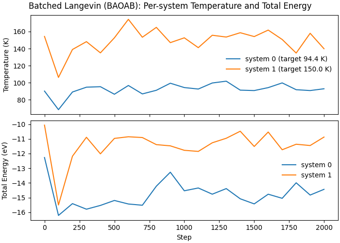

Note
Go to the end to download the full example code.
Batched Langevin Dynamics (BAOAB) with Lennard-Jones Potential#
This example demonstrates batched molecular dynamics: multiple independent systems are packed into a single set of arrays, and we integrate all systems in one go on the GPU.
Why batching matters#
Many workflows (sampling, optimization, hyperparameter sweeps) involve running many small systems. Batching amortizes kernel launch overhead and improves GPU utilization.
In this example we: - create two independent FCC argon systems (256 atoms each), - assign each system a different target temperature, - run a batched Langevin (BAOAB) trajectory, - plot per-system temperature and total energy vs step.
from __future__ import annotations
import matplotlib.pyplot as plt
import numpy as np
import warp as wp
from _dynamics_utils import (
DEFAULT_CUTOFF,
DEFAULT_SKIN,
EPSILON_AR,
SIGMA_AR,
BatchedMDSystem,
create_fcc_argon,
run_batched_langevin_baoab,
)
print("=" * 95)
print("BATCHED LANGEVIN (BAOAB) DYNAMICS WITH LENNARD-JONES POTENTIAL")
print("=" * 95)
print()
device = "cuda:0" if wp.is_cuda_available() else "cpu"
print(f"Using device: {device}")
num_systems = 2
positions_0, cell_0 = create_fcc_argon(num_unit_cells=4, a=5.26) # 256 atoms
positions_1, cell_1 = create_fcc_argon(
num_unit_cells=4, a=5.26
) # identical second system
positions = np.concatenate([positions_0, positions_1], axis=0)
batch_idx = np.concatenate(
[
np.zeros(len(positions_0), dtype=np.int32),
np.ones(len(positions_1), dtype=np.int32),
],
axis=0,
)
cells = np.stack([cell_0, cell_1], axis=0)
system = BatchedMDSystem(
positions=positions,
cells=cells,
batch_idx=batch_idx,
num_systems=num_systems,
epsilon=EPSILON_AR,
sigma=SIGMA_AR,
cutoff=DEFAULT_CUTOFF,
skin=DEFAULT_SKIN,
switch_width=0.0,
device=device,
dtype=np.float64,
)
temperatures = np.array([94.4, 150.0], dtype=np.float64)
frictions = np.array([0.01, 0.01], dtype=np.float64)
system.initialize_temperature(temperatures, seed=42)
history = run_batched_langevin_baoab(
system=system,
num_steps=2000,
dt_fs=1.0,
temperatures_K=temperatures,
frictions_per_fs=frictions,
log_interval=100,
seed=123,
)
===============================================================================================
BATCHED LANGEVIN (BAOAB) DYNAMICS WITH LENNARD-JONES POTENTIAL
===============================================================================================
Using device: cuda:0
Initialized velocities: target=[ 94.4 150. ] K, actual=[ 90.37828565 152.31501411] K
Running batched Langevin (BAOAB): 2 systems, 512 atoms total
dt = 1.000 fs; temperatures=[ 94.4 150. ] K; frictions=[0.01 0.01] 1/fs
========================================================================================================================
Step Sys KE (eV) PE (eV) Total (eV) T (K) Neighbors max|F| ms/step
========================================================================================================================
0 0 2.9722 -15.2426 -12.2704 90.17 9984 1.953e-02 0.010
0 1 5.0852 -15.1483 -10.0631 154.28 9984 1.880e-02 0.010
========================================================================================================================
Step Sys KE (eV) PE (eV) Total (eV) T (K) Neighbors max|F| ms/step
========================================================================================================================
100 0 2.2541 -18.4702 -16.2161 68.39 10112 2.299e-01 0.635
100 1 3.5013 -19.0061 -15.5048 106.22 10240 2.623e-01 0.635
========================================================================================================================
Step Sys KE (eV) PE (eV) Total (eV) T (K) Neighbors max|F| ms/step
========================================================================================================================
200 0 2.9367 -18.3492 -15.4125 89.10 10276 2.814e-01 0.635
200 1 4.5800 -16.7618 -12.1819 138.95 10298 8.497e-01 0.635
========================================================================================================================
Step Sys KE (eV) PE (eV) Total (eV) T (K) Neighbors max|F| ms/step
========================================================================================================================
300 0 3.1229 -18.9144 -15.7916 94.74 10307 2.561e-01 0.637
300 1 4.8834 -15.7756 -10.8922 148.16 10309 4.313e-01 0.637
========================================================================================================================
Step Sys KE (eV) PE (eV) Total (eV) T (K) Neighbors max|F| ms/step
========================================================================================================================
400 0 3.1423 -18.6767 -15.5345 95.33 10303 4.124e-01 0.626
400 1 4.4502 -16.4704 -12.0201 135.01 10309 4.014e-01 0.626
========================================================================================================================
Step Sys KE (eV) PE (eV) Total (eV) T (K) Neighbors max|F| ms/step
========================================================================================================================
500 0 2.8504 -18.0474 -15.1969 86.48 10302 4.063e-01 0.623
500 1 5.0318 -16.0012 -10.9694 152.66 10319 4.498e-01 0.623
========================================================================================================================
Step Sys KE (eV) PE (eV) Total (eV) T (K) Neighbors max|F| ms/step
========================================================================================================================
600 0 3.1884 -18.6259 -15.4375 96.73 10313 3.042e-01 0.643
600 1 5.7459 -16.6027 -10.8567 174.32 10303 4.561e-01 0.643
========================================================================================================================
Step Sys KE (eV) PE (eV) Total (eV) T (K) Neighbors max|F| ms/step
========================================================================================================================
700 0 2.8628 -18.3848 -15.5221 86.85 10332 3.293e-01 0.635
700 1 5.0541 -15.9646 -10.9105 153.34 10302 4.336e-01 0.635
========================================================================================================================
Step Sys KE (eV) PE (eV) Total (eV) T (K) Neighbors max|F| ms/step
========================================================================================================================
800 0 3.0032 -17.2266 -14.2234 91.11 10300 2.721e-01 0.643
800 1 5.4359 -16.8288 -11.3929 164.92 10306 4.600e-01 0.643
========================================================================================================================
Step Sys KE (eV) PE (eV) Total (eV) T (K) Neighbors max|F| ms/step
========================================================================================================================
900 0 3.2763 -16.5478 -13.2715 99.40 10283 3.659e-01 0.631
900 1 4.8456 -16.3217 -11.4761 147.01 10308 3.752e-01 0.631
========================================================================================================================
Step Sys KE (eV) PE (eV) Total (eV) T (K) Neighbors max|F| ms/step
========================================================================================================================
1000 0 3.1085 -17.6462 -14.5377 94.31 10305 3.243e-01 0.633
1000 1 5.0313 -16.8110 -11.7797 152.64 10314 3.813e-01 0.633
========================================================================================================================
Step Sys KE (eV) PE (eV) Total (eV) T (K) Neighbors max|F| ms/step
========================================================================================================================
1100 0 3.0516 -17.3980 -14.3463 92.58 10310 3.216e-01 0.631
1100 1 4.6511 -16.5057 -11.8547 141.11 10316 4.538e-01 0.631
========================================================================================================================
Step Sys KE (eV) PE (eV) Total (eV) T (K) Neighbors max|F| ms/step
========================================================================================================================
1200 0 3.2854 -18.0545 -14.7691 99.67 10317 2.938e-01 0.634
1200 1 5.1310 -16.3984 -11.2674 155.67 10315 5.352e-01 0.634
========================================================================================================================
Step Sys KE (eV) PE (eV) Total (eV) T (K) Neighbors max|F| ms/step
========================================================================================================================
1300 0 3.3553 -17.7433 -14.3880 101.80 10310 4.225e-01 0.631
1300 1 5.0615 -16.0205 -10.9590 153.56 10307 4.708e-01 0.631
========================================================================================================================
Step Sys KE (eV) PE (eV) Total (eV) T (K) Neighbors max|F| ms/step
========================================================================================================================
1400 0 3.0088 -18.0916 -15.0828 91.28 10302 3.348e-01 0.631
1400 1 5.2288 -15.7087 -10.4799 158.64 10313 3.836e-01 0.631
========================================================================================================================
Step Sys KE (eV) PE (eV) Total (eV) T (K) Neighbors max|F| ms/step
========================================================================================================================
1500 0 2.9925 -18.4228 -15.4303 90.79 10314 3.243e-01 0.629
1500 1 5.0798 -16.5981 -11.5184 154.11 10296 5.634e-01 0.629
========================================================================================================================
Step Sys KE (eV) PE (eV) Total (eV) T (K) Neighbors max|F| ms/step
========================================================================================================================
1600 0 3.1061 -17.8766 -14.7705 94.24 10323 4.137e-01 0.633
1600 1 5.3310 -15.8646 -10.5336 161.73 10300 5.152e-01 0.633
========================================================================================================================
Step Sys KE (eV) PE (eV) Total (eV) T (K) Neighbors max|F| ms/step
========================================================================================================================
1700 0 3.2885 -18.3383 -15.0498 99.77 10313 3.288e-01 0.635
1700 1 4.9671 -16.7088 -11.7417 150.70 10300 5.192e-01 0.635
========================================================================================================================
Step Sys KE (eV) PE (eV) Total (eV) T (K) Neighbors max|F| ms/step
========================================================================================================================
1800 0 3.0257 -17.0184 -13.9927 91.79 10297 2.859e-01 0.629
1800 1 4.4428 -15.8092 -11.3664 134.79 10311 4.902e-01 0.629
========================================================================================================================
Step Sys KE (eV) PE (eV) Total (eV) T (K) Neighbors max|F| ms/step
========================================================================================================================
1900 0 2.9929 -17.8211 -14.8283 90.80 10311 2.989e-01 0.629
1900 1 5.2070 -16.6615 -11.4545 157.97 10297 3.853e-01 0.629
========================================================================================================================
Step Sys KE (eV) PE (eV) Total (eV) T (K) Neighbors max|F| ms/step
========================================================================================================================
1999 0 3.0620 -17.5010 -14.4390 92.90 10312 2.996e-01 0.623
1999 1 4.6097 -15.4874 -10.8777 139.85 10304 4.324e-01 0.623
Plot per-system traces
fig, ax = plt.subplots(2, 1, figsize=(7.0, 5.0), sharex=True, constrained_layout=True)
for sys_id, stats in history.items():
steps = np.array([s.step for s in stats])
temps = np.array([s.temperature for s in stats])
energies = np.array([s.total_energy for s in stats])
ax[0].plot(
steps,
temps,
lw=1.5,
label=f"system {sys_id} (target {temperatures[sys_id]:.1f} K)",
)
ax[1].plot(steps, energies, lw=1.5, label=f"system {sys_id}")
ax[0].set_ylabel("Temperature (K)")
ax[0].legend(frameon=False, loc="best")
ax[1].set_xlabel("Step")
ax[1].set_ylabel("Total Energy (eV)")
ax[1].legend(frameon=False, loc="best")
fig.suptitle("Batched Langevin (BAOAB): Per-system Temperature and Total Energy")

Text(0.5, 0.991666, 'Batched Langevin (BAOAB): Per-system Temperature and Total Energy')
Total running time of the script: (0 minutes 1.456 seconds)